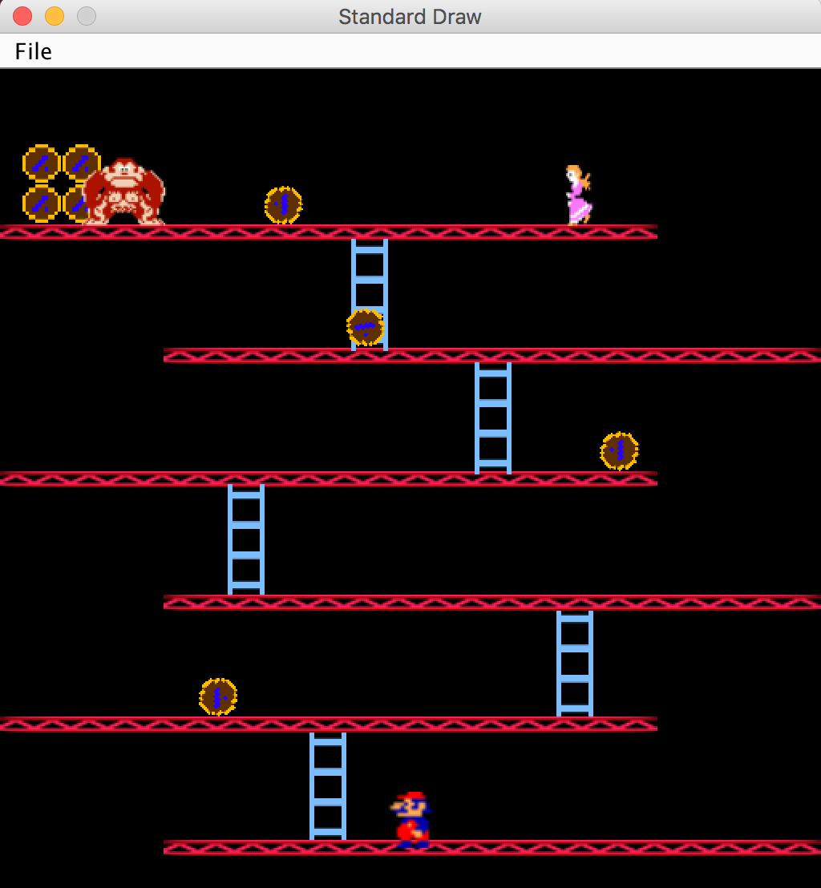

Max B. Grove
Coding Experience
Java, HTML, CSS
Java
This game was created using object-oriented Java Programming. My partner and I completed it in Penn's Intro to Computer Programming class.
You can download the game by clicking here and running the downloaded "World.jar" file. Your browser may say the file might harm your computer but I can assure you it only contains the necessary Java files for running the Donkey Kong game.
The source code (with ReadMe) for the game is listed on Github.
HTML and CSS
This website was created to showcase my self-taught knowledge of HTML and CSS. The source code can be obtained by right-clicking anywhere on the background and selecting 'Show Page Source.' or navigating to the code on Github. It was created from nothing and took 6 versions to be built into the site it is today.
The 'Schooling' icon at the top of the page was taken from Apple, Inc. All other images and icons are free use or designed by me.